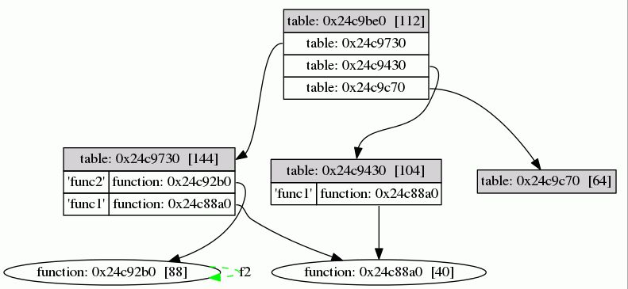

Checking the value of a Lua variable during debugging is often
invaluable and print() is a commonly used debugging tool. But what
about complex table values? Many Lua programmers have written their
own pretty-printer or data dumper and some even use it for
(de-)serializing Lua data structures. But this seems to reach its
limit when one takes cyclic references, metatables, upvalues and
environment tables into account.
This module dumps arbitrarily complex Lua values as GraphViz .dot-files that can be transformed into a variety of image formats.
Somewhere in your Lua scripts require this module and call the result, passing a file name and the value to be inspected:
$ cat > test.lua
local up1 = false
local up2 = io.stdout
local t1 = { val = 1 }
local t2 = { val = 2 }
setmetatable( t1, { __index = function( t, k )
if t2[ k ] ~= nil then
return t2[ k ]
else
return up1 or up2
end
end } )
setmetatable( t2, { __index = t1 } )
require( "microscope" )( "example1.dot", t1 )
^D
Run the script and convert the resulting .dot file to a nice image:
$ lua test.lua
$ dot -T gif -o example1.gif example1.dot
This results in:
The function returned from the require-call takes two mandatory
arguments:
After those two arguments, a number of optional arguments can be given (in any order):
a number
This limits the number of linked values to display. 1 means
only the passed Lua value itself, 2 means the value itself and
any value that can be reached in 1 step, and so on. Default is 0
which means to follow all links.
any table, userdata, function or thread
Prunes the resulting graph at the given value. Typical use cases
are the microscope function itself, package.loaded or even
_G.
"html", "nohtml"
Enables/disables the generation of HTML code in the .dot files.
HTML code is used for prettier tables, but older GraphViz versions
cannot handle HTML. If you see strange code in your images, try
the "nohtml"-option. Default is "html".
"environments", "noenvironments"
Enables/disables display of environment tables. Most functions
share the global environment and the pictures get quite big, so
the default is "noenvironments".
"upvalues", "noupvalues"
Enables/disables display of upvalues for functions. Default is
"upvalues".
"metatables", "nometatables"
Enables/disables display of metatables for tables/userdata.
Default is "metatables".
"leaves", "noleaves"
Sometimes (when a value is part of a table and does not have any
outgoing links), it is unnecessary to draw an extra shape for this
value, as it would clutter the image. This option enables/disables
the generation of leaf nodes in the graph. Default is
"noleaves".
"locals", "nolocals"
Enables/disables display of a table-like stack with local
variables for all suspended and active coroutines. If no coroutine
is active, the main stack is displayed as well. Default is
"nolocals". All settings that limit graph node output also apply
to the references in the stack(s).
"registry", "noregistry"
Enables/disables display of the Lua registry table. The registry
is included as another root node in the graph output. Default is
"noregistry". All settings that limit graph node output also
apply to the references in the registry.
"sizes", "nosizes"
If lua-getsize is available in package.cpath, the size of a
table, userdata, thread, and function will be added to the label
automatically. This setting enables/disables the creation of extra
nodes in the graph also showing the object's size. The default is
"nosizes".
any other string
Any other string is used as a label for the graph. If multiple labels are given, only the last one is used.
The output function (if used as first argument) takes one argument and
should write its argument and a trailing newline to wherever you want
(the print-function is compatible).
Showing (custom) environment tables:
local t1 = { val = 1 }
local t2 = { 1, 2, 3, val = 2 }
setmetatable( t1, { __index = t2 } )
local function f1()
print( val, t2.val )
end
setfenv( f1, t1 )
require( "microscope" )( "example2.dot", f1, "environments" )
Leads to:
Limiting displayed elements:
local t = { { { { { {} } } } } }
local todot = require( "microscope" )
todot( "example3.dot", t )
todot( "example4.dot", t, 3 )
Leads to:
and
Showing leaf nodes in the graph:
local function f1() end
local function f2()
return f2()
end
local t1 = { func1 = f1, func2 = f2 }
local t2 = { func1 = f1 }
local t = { t1, t2, {} }
local todot = require( "microscope" )
todot( "example5.dot", t )
todot( "example6.dot", t, "leaves" )
Leads to:
and 
The source code (with documentation and test scripts) is available on github.
There are two ways to install this module, either using luarocks (if this module already is in the main luarocks repository) or manually.
Using luarocks, simply type:
luarocks install microscope
To install the module manually just drop the Lua file microscope.lua
somewhere into your Lua package.path.
Version 0.4:
__tostring metamethodsVersion 0.3:
__tostring metamethods.cdata values.Version 0.2:
Philipp Janda, siffiejoe(a)gmx.net
Comments and feedback are always welcome.
microscope is copyrighted free software distributed under the MIT
license (the same license as Lua 5.1). The full license text follows:
microscope (c) 2013-2014 Philipp Janda
Permission is hereby granted, free of charge, to any person obtaining
a copy of this software and associated documentation files (the
"Software"), to deal in the Software without restriction, including
without limitation the rights to use, copy, modify, merge, publish,
distribute, sublicense, and/or sell copies of the Software, and to
permit persons to whom the Software is furnished to do so, subject to
the following conditions:
The above copyright notice and this permission notice shall be
included in all copies or substantial portions of the Software.
THE SOFTWARE IS PROVIDED "AS IS", WITHOUT WARRANTY OF ANY KIND,
EXPRESS OR IMPLIED, INCLUDING BUT NOT LIMITED TO THE WARRANTIES OF
MERCHANTABILITY, FITNESS FOR A PARTICULAR PURPOSE AND NONINFRINGEMENT.
IN NO EVENT SHALL THE AUTHOR OR COPYRIGHT HOLDER BE LIABLE FOR ANY
CLAIM, DAMAGES OR OTHER LIABILITY, WHETHER IN AN ACTION OF CONTRACT,
TORT OR OTHERWISE, ARISING FROM, OUT OF OR IN CONNECTION WITH THE
SOFTWARE OR THE USE OR OTHER DEALINGS IN THE SOFTWARE.